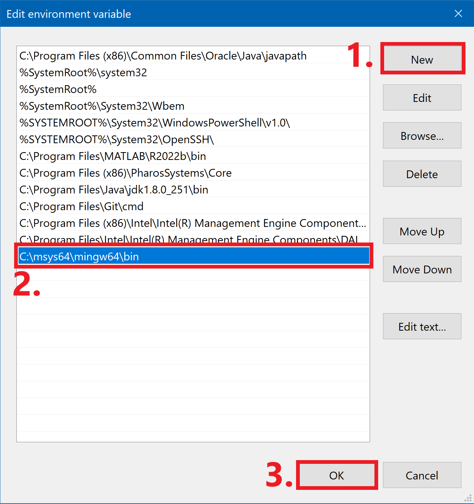

Since C/C++ are compiled languages they must be translated (compiled) before the source code can be executed on a system. Thus, a compiler must be installed in order to compile the program so it can be executed. MinGW is a popular and free compiler used for C and C++. The executable file for the compiler can be downloaded from MSYS2.
Download the executable under installation and run the .exe file. Select the default settings or change them how you want. Click finished when you are done.
A terminal will be launched once the compiler has been installed. If you prefer to do the remaining steps later then you will have to launch the terminal from the start menu. The application to launch will be named MSYS2 MSYS. In the terminal, apply the following command to install the compiler:
You will need to need to install the full Mingw-w64 toolchain to get the gdb debugger. The gdb debugger helps trouble shoot code and set breakpoints. In the terminal, apply the following command to install gdb:
\mingw64\bin
appended, to the system path. The exact path depends on which version of
Mingw-w64 you have installed and where you installed it. You can also navigate to the bin folder
whithin mingw64, copy the path the the url, and add it to the path. Select OK to save the
updated PATH.

#include <stdio.h>
int main() {
printf("Hello World!");
return 0;
}
Hello World!